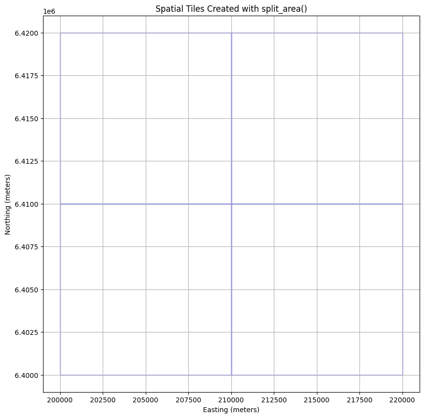

# %pip install -U "openeo>=0.50" geopandas matplotlib numpy pandas rasterio pyarrowEO Data Processing with the openEO MultiBackendJobManager
In this notebook, we will demonstrate how to use the MultiBackendJobManager to set-up and track multiple jobs at once using OpenEO.
This example will specifically focus on how to a manage a compositing workflow over a large spatial extent.
Key features
- Job Splitting: Divide a large area into smaller tiles and create separate openEO jobs for each tile.
- Job Tracking: Keep track of jobs their statuses and results across different backends.
- Database Support: Persist job metadata using CSV or Parquet files, allowing you to resume tracking after interruptions.
Table of Contents
Import Libraries and Define Constants
We will start by importing the necessary libraries and defining some constants for our compositing workflow.
Note: the split_area() function has been introduced in version 0.50.0 of the openeo-python-client. If you are using an older version, you can update it using pip install --upgrade openeo.
from pathlib import Path
import geopandas as gpd
import matplotlib.pyplot as plt
import numpy as np
import openeo
import pandas as pd
import rasterio
from openeo.extra.job_management import (
MultiBackendJobManager,
create_job_db,
split_area,
)
# Constants
TILING_PROJECTION = "EPSG:3857"
AREA_OF_INTEREST = {
"west": 200_000.0,
"south": 6_400_000.0,
"east": 220_000.0,
"north": 6_420_000.0,
"crs": TILING_PROJECTION,
}
TILE_SIZE = 10_000 # 10 km in metersCreating the Jobs Database
The MultiBackendJobManager uses a jobs database to set up, start, and monitor all desired jobs.
In this updated example, we use the built-in split_area() helper to turn a larger area of interest into one job per tile.
split_area() returns a geopandas.GeoDataFrame, which can be used directly as the starting point for the jobs database.
If your environment still uses an older openeo-python-client release, upgrade it first so split_area() is available.
Split the Area of Interest Into Tiles
Each row in the resulting GeoDataFrame represents one 10 km x 10 km tile that the job manager can process as an individual batch job.
jobs_database = split_area(
aoi=AREA_OF_INTEREST,
tile_size=TILE_SIZE,
projection=TILING_PROJECTION,
)
# We add a tile_id column to the database for easier reference to the tiles when creating and managing jobs
jobs_database["tile_id"] = jobs_database.index
jobs_database.head()| geometry | tile_id | |
|---|---|---|
| 0 | POLYGON ((210000 6400000, 210000 6410000, 2000... | 0 |
| 1 | POLYGON ((210000 6410000, 210000 6420000, 2000... | 1 |
| 2 | POLYGON ((220000 6400000, 220000 6410000, 2100... | 2 |
| 3 | POLYGON ((220000 6410000, 220000 6420000, 2100... | 3 |
We can illustrate how the defined windows map across the area of interest.
def visualize_spatial_extents(jobs_database: gpd.GeoDataFrame):
"""Visualize the job tiles generated by split_area()."""
_, ax = plt.subplots(figsize=(10, 10))
jobs_database.plot(ax=ax, facecolor="none", edgecolor="blue")
plt.xlabel("Easting (meters)")
plt.ylabel("Northing (meters)")
plt.title("Spatial Tiles Created with split_area()")
plt.grid(True)
plt.show()
visualize_spatial_extents(jobs_database)
Creating the Job
The next step is to define a start_job function. This function will instruct the MultiBackendJobManager on how to initiate a new job on the selected backend. The start_job functionality should adhere to the following structure _start_job(row: pd.Series, connection: openeo.Connection, **kwargs)_.
In this example, the MultiBackendJobManager will iterate through the provided jobs database and run a basic compositing workflow for each individual row of the jobs database.
While this example demonstrates a basic compositing workflow, the MultiBackendJobManager is capable of handling multiple high-computation jobs simultaneously.
def start_job(row: pd.Series, connection: openeo.Connection, **_) -> openeo.BatchJob:
"""Start a new job for a single split_area tile."""
west, south, east, north = row.geometry.bounds
spatial_extent = {
"west": west,
"south": south,
"east": east,
"north": north,
"crs": TILING_PROJECTION,
}
# Build the openEO process
scl = connection.load_collection(
collection_id="SENTINEL2_L2A",
spatial_extent=spatial_extent,
temporal_extent=["2022-06-01", "2022-09-01"],
bands=["SCL"],
properties={"eo:cloud_cover": lambda x: x.lte(60)},
)
cloud_mask = scl.process(
"to_scl_dilation_mask",
data=scl,
kernel1_size=17,
kernel2_size=77,
mask1_values=[2, 4, 5, 6, 7],
mask2_values=[3, 8, 9, 10, 11],
erosion_kernel_size=3,
)
s2_cube = connection.load_collection(
collection_id="SENTINEL2_L2A",
spatial_extent=spatial_extent,
temporal_extent=["2022-06-01", "2022-09-01"],
bands=["B02", "B03", "B04"],
properties={"eo:cloud_cover": lambda x: x.lte(60)},
)
# Mask out clouds
s2_cube = s2_cube.mask(cloud_mask)
# Create a composite by taking the mean
s2_cube = s2_cube.reduce_temporal(reducer="median")
return s2_cube.create_job(
title=f"MultiBackendJobManager - Tile {row['tile_id']}",
out_format="GTiff",
)Managing Jobs Using MultiBackendJobManager
With our split tiles and job definition set up, we can now run the jobs using the MultiBackendJobManager. This involves defining a path to where we will store the persistent job tracker.
Steps to Run the Jobs:
Create a persistent job database: Use
create_job_db()to initialize a CSV or Parquet-backed tracker from theGeoDataFramereturned bysplit_area().The job tracker will also include bookkeeping columns such as
status, allowing you to monitor which jobs have been created, are running, have finished, or encountered an error.Caution: If the tracker file already exists,
on_exists="skip"reuses it instead of overwriting it. Delete the file first if you want to start from a clean slate.
Initialize the MultiBackendJobManager: We create an instance of the
MultiBackendJobManagerand add a backend of our choice, which will be responsible for executing the jobs.Caution: The number of parallel jobs refers to how many jobs the job manager tracks at once. However, the backend itself limits the actual number of jobs that can start and run at the same time to 2.
- Run Multiple Jobs: Use
manager.run_jobsto create the desired jobs and send them to the backend. The selected job tracker will be updated with the actual job statuses and usage metrics.
# Generate a unique name for the tracker
job_tracker = "community_example_job_tracker.parquet"
job_db = create_job_db(job_tracker, df=jobs_database, on_exists="skip")
# Initiate MultiBackendJobManager
manager = MultiBackendJobManager()
connection = openeo.connect(url="openeo.dataspace.copernicus.eu").authenticate_oidc()
manager.add_backend("cdse", connection=connection, parallel_jobs=2)
# Run the jobs
manager.run_jobs(job_db=job_db, start_job=start_job)
print("All jobs have finished running.")Authenticated using refresh token.
All jobs have finished running.Visualize Output
Once a job is finalized, the output is automatically downloaded into a dedicated folder named after the job ID. The data is saved in GeoTIFF format.
With this data in hand, we can now visualize the results of our various jobs.
S2_RGB_GAMMA = 2.2
S2_RGB_STRETCH = {
"red": (0.02, 0.40),
"green": (0.02, 0.40),
"blue": (0.02, 0.45),
}
def normalize(
array: np.ndarray, min_reflectance: float, max_reflectance: float
) -> np.ndarray:
"""Apply one fixed Sentinel-2 reflectance stretch across all tiles."""
reflectance = array.astype(np.float32) / 10_000.0
clipped = np.clip(reflectance, min_reflectance, max_reflectance)
normalized = (clipped - min_reflectance) / (max_reflectance - min_reflectance)
corrected = np.power(normalized, 1 / S2_RGB_GAMMA)
return (corrected * 255).astype(np.uint8)
def visualize_output(output_df: gpd.GeoDataFrame):
"""Visualize output images for finished jobs within their spatial tiles."""
_, ax = plt.subplots(figsize=(10, 10))
x_min, x_max, y_min, y_max = (
float("inf"),
float("-inf"),
float("inf"),
float("-inf"),
)
finished_jobs = output_df[output_df["status"] == "finished"]
for _, row in finished_jobs.iterrows():
west, south, east, north = row.geometry.bounds
extent_bounds = (west, east, south, north)
image_path = Path(f"job_{row['id']}") / "openEO.tif"
if not image_path.exists():
continue
with rasterio.open(image_path) as src:
band_blue = normalize(src.read(1), *S2_RGB_STRETCH["blue"])
band_green = normalize(src.read(2), *S2_RGB_STRETCH["green"])
band_red = normalize(src.read(3), *S2_RGB_STRETCH["red"])
rgb_image = np.dstack((band_red, band_green, band_blue))
x_min = min(x_min, west)
x_max = max(x_max, east)
y_min = min(y_min, south)
y_max = max(y_max, north)
ax.imshow(rgb_image, extent=extent_bounds, origin="upper", alpha=1)
ax.add_patch(
plt.Rectangle(
(west, south),
east - west,
north - south,
linewidth=1,
edgecolor="blue",
facecolor="none",
)
)
if x_min == float("inf"):
raise FileNotFoundError(
"No finished job outputs were found for the requested date."
)
padding = TILE_SIZE / 5
ax.set_xlim(x_min - padding, x_max + padding)
ax.set_ylim(y_min - padding, y_max + padding)
plt.xlabel("Easting (meters)")
plt.ylabel("Northing (meters)")
plt.title("Output Images Visualization within Spatial Tiles")
plt.grid(True)
plt.show()
output_df = gpd.read_parquet(job_tracker)
visualize_output(output_df)